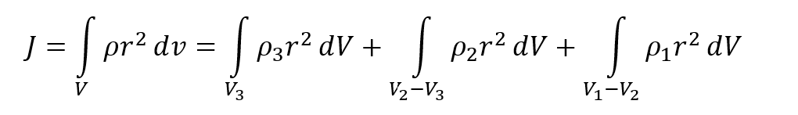
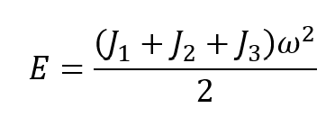
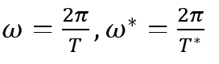

Задача 8
Имеется трехслойное тело (рис. 1) сферической формы, которое вращается в пространстве вокруг некоторой оси z с частотой w.
Рис. 1
Плотности слоев есть p1, p2, p3 с соответствующими радиусами R1, R2 и R3. Выяснить, как изменится период вращения, если окажется, что плотности p1 и p2 равны. В обоих случаях энергия сохраняется.
Решение
По определению, энергия вращательного движения записывается так:
где момент инерции тела J складывается в нашем случае из трех частей:
Если перейти теперь во всех трех интегралах в сферическую систему координат, то при условии, что плотности в каждой из областей постоянные, получим для каждого из интегралов:

Следовательно, полная энергия вращающегося тела составит сумму

В случае, когда p1 = p2, но энергия E сохраняется (!), получаем
где ω* – изменившаяся частота вращения.
Приравнивая выражения (1) и (2) и вспоминая, что частоты вращения связаны с периодом соотношениями
где T и T* - искомые периоды, находим, что
Задача решена. Заметим в заключение, что приведенный пример не является абстрактным, а имеет вполне реальный физический смысл. Речь идет о Земле. Структура Земли представляет собой чередование нескольких слоев: кора (плотность p1), верхняя мантия (плотность p2), нижняя мантия (плотность p3), жидкая магматическая субстанция (плотность p4), твердое ядро (плотность p5). В процессе остывания ядра произойдет постепенное выравнивание плотностей нижней мантии и магмы (p3 = p4), в результате чего период обращения изменится, причем, если p3 > p4,- в сторону уменьшения.